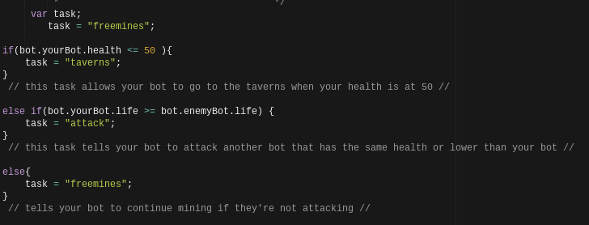
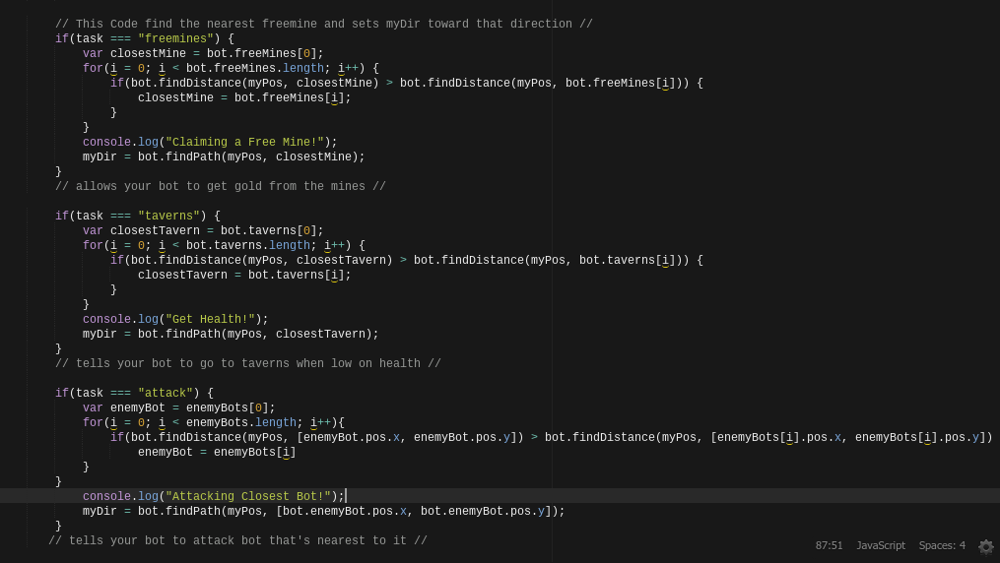

What is Vindinium?
Vindinium is a game that involves Artificial Intelligence to be programmed by the player with codes to do certain commands. The player will control their character by using any codes they want to, go to taverns, get gold, or attack other players. Whoever gets the greatest amount of gold in the game, will be the winner.
My Bot Codes


These are my codes and my bot can go to any free mines, go to the tavern closest to them when their health is lower than 50. Last but not least, my bot will attack any bots that are near them if their health is higher in amount than the enemy bot. These are the basic commands that most bots did so I just used these so my bot can do some things in the game.
My Bot's Codes Explained
What I've Learned About AI?
I learned how to control my bot with coding and through trial and error, figured out why certain codes are written in certain ways or orders. Some of the codes written were simple and really easy to remember, but some were complicated to figure out, but after they are figured out, it's actually really logical and makes a lot of sense. My understandings of AI's have changed since I've done this project because I've learned more about how they work and why certain codes are written the way they are.